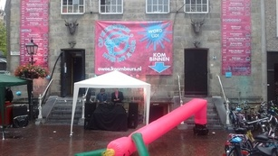

پیادهروی در دلفت-هیجده آگوست دوهزار و پانزده

باران خوشی میآمد. صدای موسیقی این جوانها اما گوشخراش بود. یکی از این آدمکهای بادی هم داشتند. خواستم عکس بگیرم اما کمپرسر خوب کار نمیکرد و آدمک توخالی افتاد. یادم است بچه که بودیم به آدمهای پرمدعا میگفتند «پُرباد». اصطلاح خوب و مناسبی بود. امیدوارم منسوخ نشود.
دیدگاهها
Comments powered by Disqus